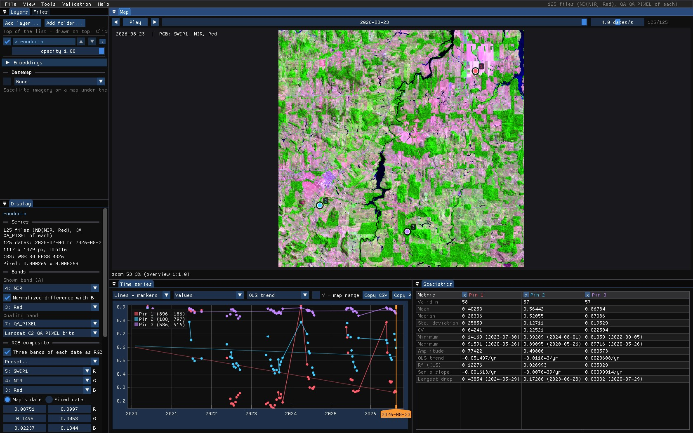
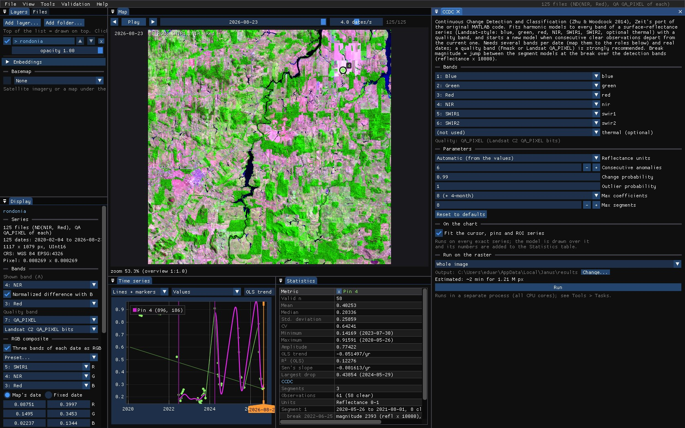
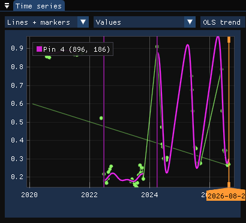
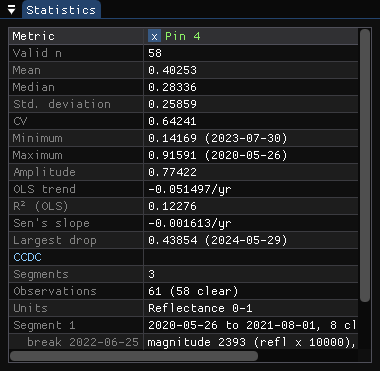
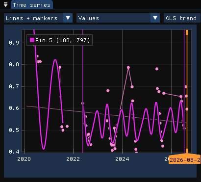
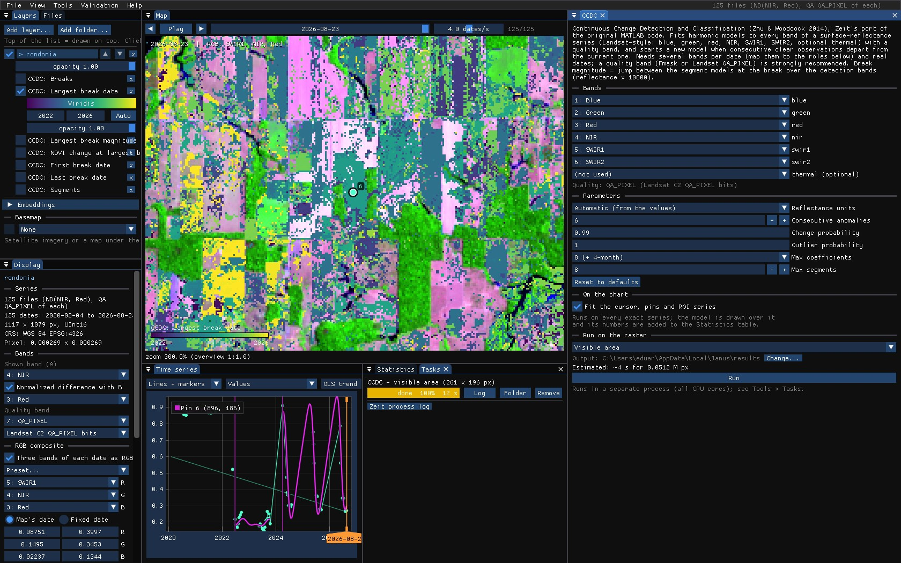
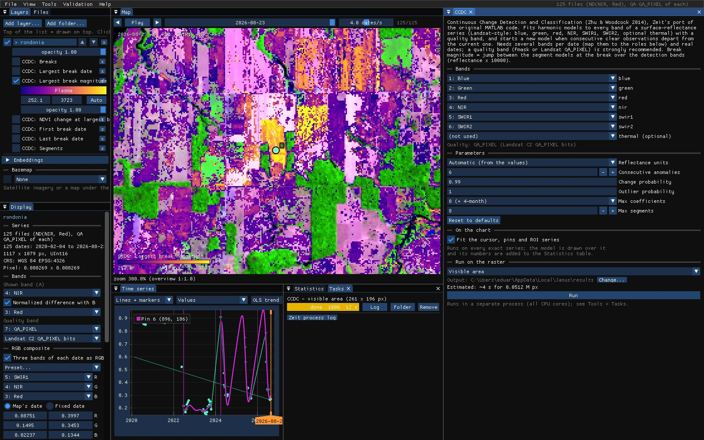
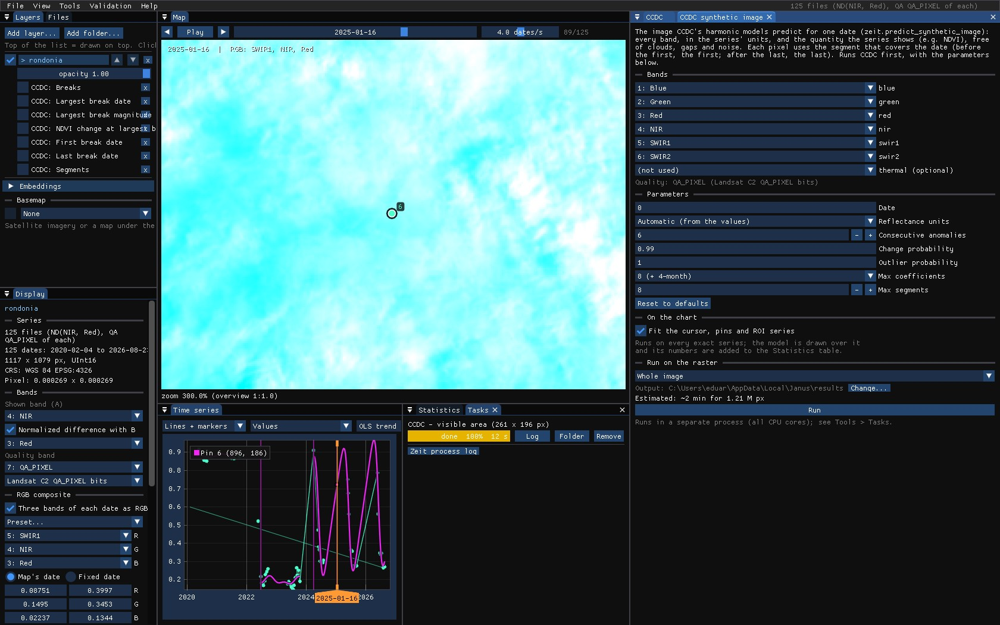
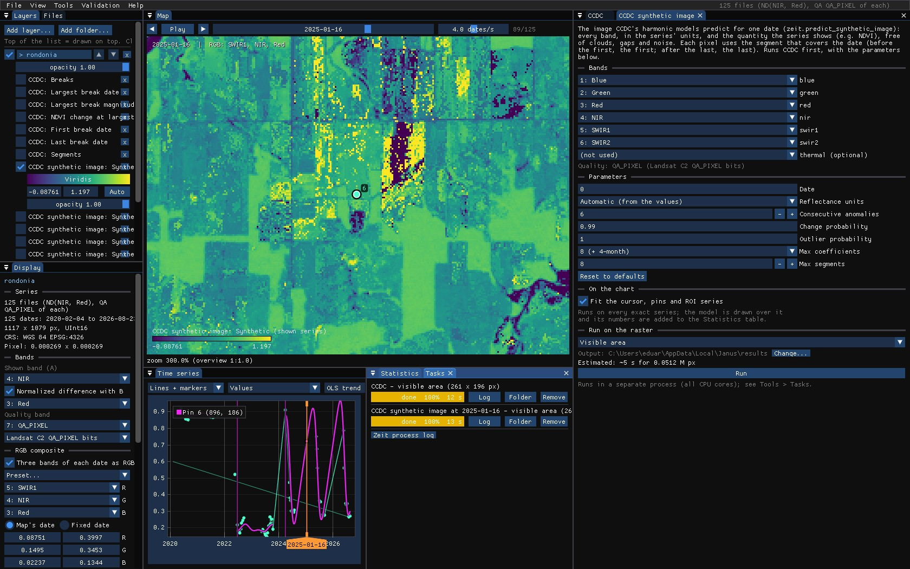

01The idea
CCDC (Continuous Change Detection and Classification, Zhu & Woodcock 2014) fits, for each band, a model made of a straight trend plus up to three harmonics of the year: the seasons. It starts on the first clear observations, then compares each new one with what the model predicts. When six observations in a row fall too far from it, over the green to SWIR2 bands together, that is a break: the model ends and a new one starts after it. A single odd observation (a cloud the mask missed) is an outlier, not a change.
- Segment
- A period with one model: the land as it was between two breaks.
- Break
- The date a segment ends because the observations stopped fitting it.
- Magnitude
- The jump between the model before and the model after, at the break, over the green to SWIR2 bands (reflectance × 10000).
CCDC works on surface reflectance, with every date a file of six bands (blue, green, red, NIR, SWIR1, SWIR2, and optionally thermal), and on real dates: every observation counts, not composites. It needs at least four observations a year and 24 in all.
02The example
125 Landsat 8 and 9 observations, February 2020 to August 2026, of a 30 × 30 km area of central Rondônia (the same landscape as the LandTrendr guide), as Collection 2 Level-2 surface reflectance with the QA_PIXEL band. Each date is a GeoTIFF of seven bands named Blue, Green, Red, NIR, SWIR1, SWIR2 and QA_PIXEL.


To open it: the folder with File → Open folder..., then, in the Display panel, NIR as the band and red for the normalized difference (the chart shows the NDVI), and SWIR1 / NIR / red as an RGB composite for the map.
Collection 2 digital numbers
Landsat Collection 2 Level-2 values are digital numbers: reflectance is DN × 0.0000275 − 0.2. CCDC detects them and converts them (Reflectance units), but an NDVI computed on the DNs themselves is wrong, because of the offset. Set the scale and offset in the files (GDAL's band scale and offset; Janus applies them), or export reflectance.
03Clouds and the quality band
CCDC needs to know which observations are clear. Janus finds a band named QA_PIXEL (or Fmask) and reads its bits: clouds, their shadows, cirrus and fill become unusable observations, on the chart (gaps) and for every tool. It is set in the Display panel, under Quality band, with the rule that reads it (Landsat C2 QA_PIXEL bits, Fmask codes...).
In this stack, as in most exports from Google Earth Engine, cloudy pixels were already masked to no data. Of 125 dates, a pixel typically has about 60 clear ones, nearly all from May to October: the dry season.
Masked dates are still observations
The original CCDC skips the pixels where fewer than half of the dates exist, a rule meant for the edges of a Landsat scene. A date masked to no data is an observation the clouds spoiled, not a missing one, and Janus passes it to CCDC as such: otherwise every pixel of a stack like this one, cloudier than clear, would get no model at all.
04The tool's window
Tools → CCDC. Its window starts with the Bands: which band of each date plays each role. Janus guesses them from the band names (NIR, SWIR1, SR_B5...), and stacks of six or more unnamed bands are taken as blue to SWIR2; change any of them in the lists. The quality band in use is named under them.
| Parameter | Default | What it does |
|---|---|---|
| Reflectance units | auto | CCDC's thresholds are in reflectance × 10000. Automatic: values with a median up to 2 are reflectance 0–1, above 6500 Collection 2 digital numbers. |
| Consecutive anomalies | 6 | Clear observations in a row beyond the threshold that make a break. Fewer: faster but more false breaks. |
| Change probability | 0.99 | The chi-square probability of the change threshold over the detection bands. |
| Outlier probability | 0.999999 | Above it, a single observation is an outlier, not change. |
| Max coefficients | 8 | The richest model: 4 (trend and one harmonic), 6 (two) or 8 (three). With few observations CCDC uses fewer by itself. |
| Max segments | 8 | Segments kept per pixel. |
05On the chart
With Fit the cursor, pins and ROI series on, each segment is drawn over the series, in what the layer shows (here the NDVI computed from the models' red and NIR), with a vertical line at each break.






The forest's segment ends with a break on 25 June 2022, a jump of 2393 in reflectance and an NDVI change of −0.69: the clearing. A second break comes in April 2024, an NDVI change of +0.70. It is not regrowth: until 2024 every clear observation of the pasture was from the dry season, and the first ones of the rainy season, when the pasture is green, did not fit a model that had never seen them.
Seasons need observations all year
The harmonics describe the seasons only where there are observations. With clear dates only from May to October, the curve between November and April is a guess, and it can swing far (the last segment above). Read breaks next to a change of the observations' season with care, and prefer fewer coefficients when the series has a long cloudy season.
On the forest opened in 2021, partly back since, CCDC also breaks in 2022, into a model that stays between forest and pasture:


06Running it
CCDC is the slowest of the tools: here about half a minute for the whole area, 1.2 million pixels, on every core. Zoom in on what you want to see and run it on the Visible area (or on the ROI) first, then on the whole image once the parameters are right. The run of these screenshots, 261 × 196 pixels around the clearing, took 12 s.
07The maps




| Map | Meaning |
|---|---|
| Breaks | How many breaks the pixel has. |
| Largest break date | The date of the break with the largest magnitude (decimal year). |
| Largest break magnitude | Its jump over the green to SWIR2 bands, reflectance × 10000. |
| NDVI change at largest break | The NDVI after it minus before it, from the models: negative is loss. |
| First / last break date | The earliest and the latest break. |
| Segments | How many models the pixel has. |
The NDVI change tells the direction the magnitude does not: a map of it with a threshold (below −0.3, say) keeps the losses and drops the seasonal artefacts and the regrowth.
08A synthetic image
The models describe every band on every day of each segment, so they can give the image of a date that has no observation, or a cloudy one. Tools → CCDC synthetic image runs CCDC and predicts the date in Date (a decimal year; 0 follows the date on the map): every band, in the series' units, and what the layer shows.




The fields and the forest are back; the saturated yellow fields are the caveat above at work: January is in the rainy season, where these models have no observation, and some of their curves overshoot.
09What next
- Degradation apart from clearing: CODED works on the same kind of series, with the NDFI.
- Validate the dates: the largest break date is a map of events; see the Validation guide.
- Compare with LandTrendr or BFAST: Tools → Agreement of change maps.
- Script it:
zeit.ccdcandzeit.predict_synthetic_imagein Python.
10References
- Zhu, Z., Woodcock, C. E. (2014). Continuous change detection and classification of land cover using all available Landsat data. Remote Sensing of Environment, 144, 152–171.
- Zhu, Z., Woodcock, C. E., Holden, C., Yang, Z. (2015). Generating synthetic Landsat images based on all available Landsat data: predicting Landsat surface reflectance at any given time. Remote Sensing of Environment, 162, 67–83.
- Zeit: its CCDC is a port of the original MATLAB code.